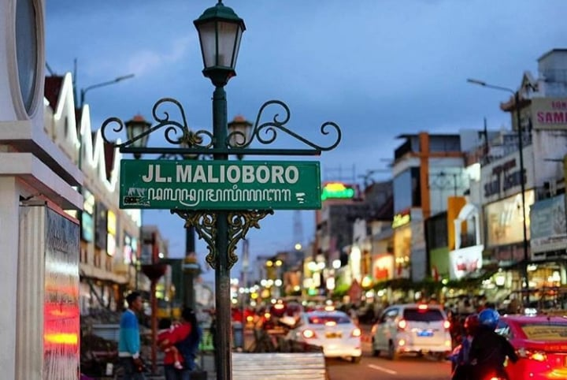
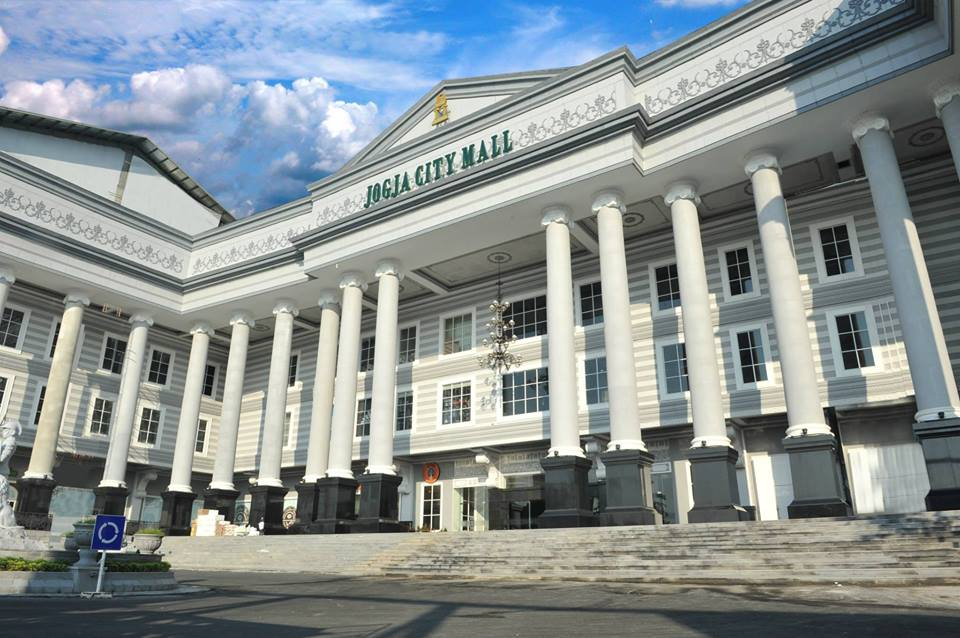
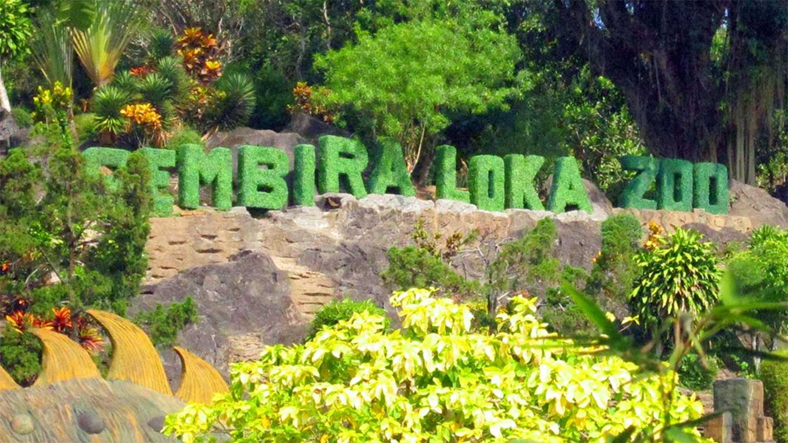
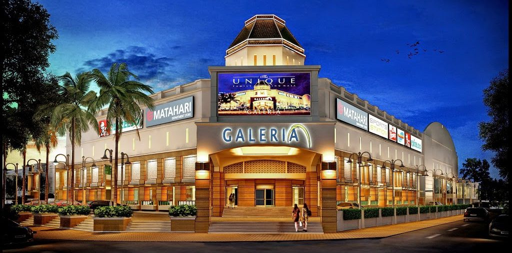

Pemberhentian Trans Jogja
Trans Jogja merupakan alat transportasi umum yang memliki banyak lokasi tujuan dengan berbagai jalur

Malioboro
Malioboro merupakan salah satu cagar
budaya dan lokasi wisata di Jogja. Transportasi yang digunakan untuk menuju lokais
tersebut sangat beragam. Salah satunya transporatasi kota, yaitu Trans Jogja. Jalur
Trans Jogja yang melewati halte ini meliputi jalur 3A 6A 6B 8 10 13 15

Candi Prambanan
Candi Prambanan merupakan bangunan
candi bercorak agama Hindu terbesar di Indonesia yang dibangun pada abad ke-9 Masehi.
Candi Prambanan ini juga digunakan sebagai destinasi wisata. Transporati umum seperti
Trans Jogja juga memiliki tujuan pemberhentian di sini. Jalur yang melewati halte ini
yaitu K3J atau Koridor 3 Trans Jogja

Jogja City Mall
Jogja City Mall merupakan sebuah pusat
pembelanjaan terbesar kedua yang berada di Jalan Magelang, Sleman, DIY. Banyak dari
warga lokal ataupun wisatawan yang berbondong bondong untuk belanja di mall ini.
Tranportasi kota seperti Trans Jogja ini dapat digunakan sebagai alokasi untuk menuju
kesana, Jalur yang melewati Jogja City Mall ini yaitu 5A, 5B dan 9

Gembira Loka
Gembira Loka merupakan salah satu taman
satwa atau kebun binatang yang berlokasi di Kota Jogja. Banyak yang berkunjung di lokasi
wisata ini dengan berbagai usia. Lokasi kebun binatang ini yang berada dikota,
memudahkan para penggunjung untuk mengakses lokasi kesana. Transportasi umum Trans Jogja
memiliki Jalur 1B dan 2B yang akan berhenti tepat di halte Gembira Loka

Galeria Mall
Galeria Mall merupakan salah satu pusat
pembelajaan yang berada di pusat Kota Yogyakarta. Galeria Mall ini sering dijadikan
sebagai tempat kumpul, belanja atau sekedar makan dan jalan jalan oleh berbagai kalangan
usia. Transportasi umum seperti Trans Jogja memiliki pemberhentian di Galeria Mall ini
tepat di depat pintu masuk seberang jalan. Jalur yang melewati portabel Trans Jogja ini
yaitu 4B.
Universitas Gadjah Mada
Universitas Gadjah Mada atau dikenal
sebagai UGM ini merupakan kampus terbesar dan menjadi kebanggan Indonesia terutama
Yogyakarta sendiri. Fasilitas umum yang disediakan di sekitar UGM ini banyak jenisnya.
Salah satunya Halte dan Portabel yang tersebar banyak mengitari wilayah Kampus.
Terhitung terdapat 8 Portabel dan 6 Halte yang tersebar. Jalur yang melewati UGM ini
meliputi jalur 1B, 2B, 3A, 3B, 4A, 4B, 5A dan 5B